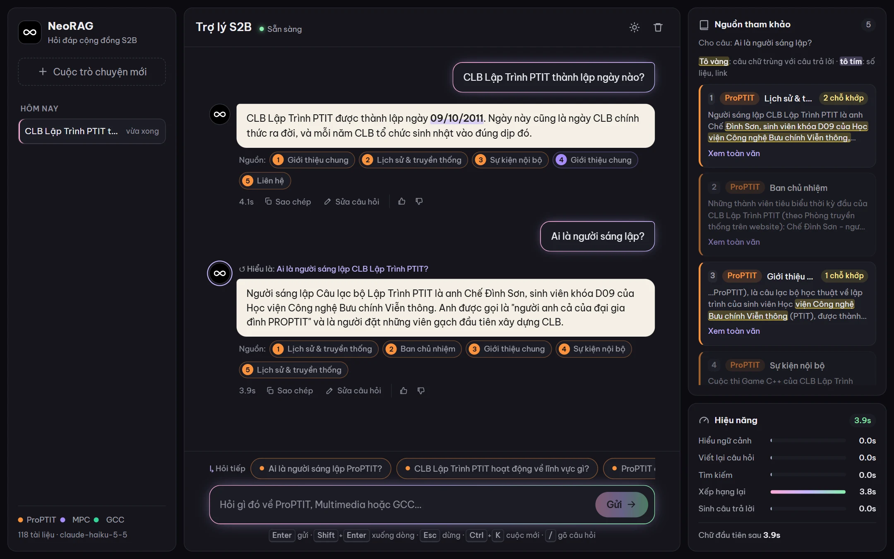
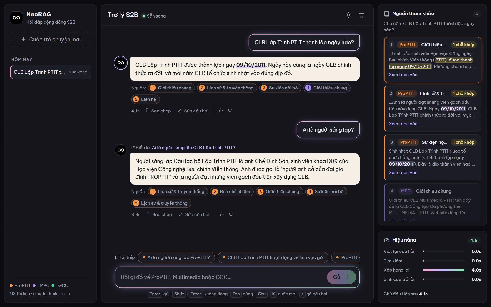
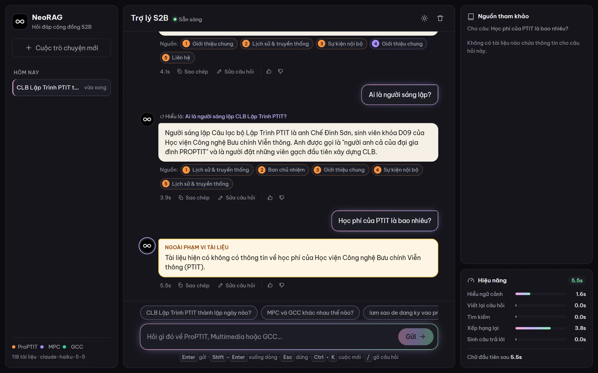
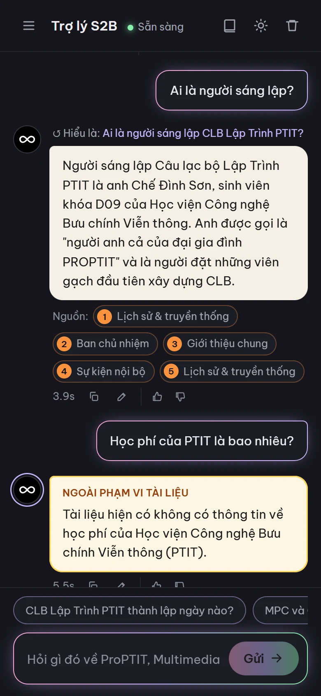

Ask about S2B, grounded in evidence.
A retrieval-augmented generation (RAG) system answering questions about the S2B student community based strictly on 118 documents. Concise answers, verbatim facts, interactive clickable citations, and rigorous abstention when evidence is absent.

88.03 Private Test · 86.17 Public Test (Baseline: 52.40)
Evaluated using the official challenge benchmark: 50% for retrieval (Recall@5, MRR@5, NDCG@5), 50% for generation (String Presence, ROUGE-L, Groundedness, Relevancy, Noise Sensitivity, Abstention).
Public & Private Submissions
Iterative single-variable changes to verify attribution.
Training Set Retrieval Progression
Mean Recall@5, MRR@5, NDCG@5 over 126 training queries.
Eight steps, each backed by empirical gains
All LLM calls execute claude-haiku-5-5 via the competition gateway. Dense embeddings (bge-m3) and cross-encoder reranker run locally. Over 20 experiments documented in the experiments log.
Query Rewrite
Restores diacritics, expands abbreviations, decomposes complex queries into distinct sub-questions.
+0.030 · exp05Dense bge-m3
Semantic retrieval retrieving top-30 candidate documents per query.
baseline · exp01BM25 + Accentless
underthesea syllable tokenization plus unaccented index handling diacritic-free queries.
+0.048 · exp04RRF Fusion
Reciprocal Rank Fusion merging dense and sparse ranked lists without score calibration.
exp03Cross-Encoder
Local bge-reranker-v2-m3 scoring the merged top-20 candidates.
Sub-query Reranking
Scores each decomposed sub-query and takes maximum score to protect multi-club evidence.
Public retrieval +8.5 · exp09Club Prioritization
Applies a calibrated soft boost to documents matching explicitly mentioned student clubs.
+0.017 · exp07Answer Generation
Top-5 documents, 1-3 sentences, verbatim facts, zero formatting hallucinations, strict abstention.
Public +2.1 · exp08Inspect evidence in real time
FastAPI + Server-Sent Events (SSE) web interface powered by the exact same benchmark pipeline. Zero build step, served directly by Python.


- Evidence before tokens: Document sources render immediately upon retrieval.
- Contextual follow-ups: Short follow-up queries rewritten using full chat context.
- Performance breakdown: Granular latency tracking across all execution stages.
- Clear error recovery: Network, gateway, and quota errors mapped with retry actions.

Optimized for Mobile Devices
On narrow viewports, history and citation panels collapse into accessible side drawers. Chat sessions persist locally in browser storage.
| Query Type | Total Latency | Bottleneck Stage |
|---|---|---|
| Cached LLM query | 1.3–4.3 s | Cross-encoder reranking |
| Fresh query | 8–13 s | Reranking & query rewrite |
| Contextual follow-up | 11–13 s | Follow-up resolution + reranking |
Benchmarked on Intel Core i7-12800H laptop, demo configuration configs/demo.toml (int8 reranker, top-10 candidates).
Three commands to run locally
Requires Python 3.10+ and challenge gateway credentials.
1. Installation
# Windows; macOS/Linux: source .venv/bin/activate
python -m venv .venv
.venv\Scripts\activate
python scripts/install.py --local
copy .env.example .env
Configure API key in .env. First run downloads the ~2 GB cross-encoder reranker.
2. Chatbot Server
python app/server.py
# Open http://127.0.0.1:8000
Wait for Uvicorn running. Streamlit fallback: python -m streamlit run app/chat.py.
3. Benchmark
neorag run train --no-judge neorag run public_test
Defaults to MyPipeline with configs/pipeline.toml. Detailed reports written to outputs/eval_*/.